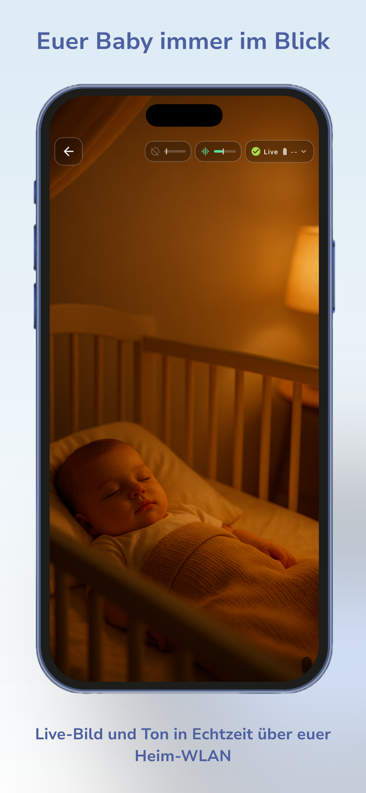
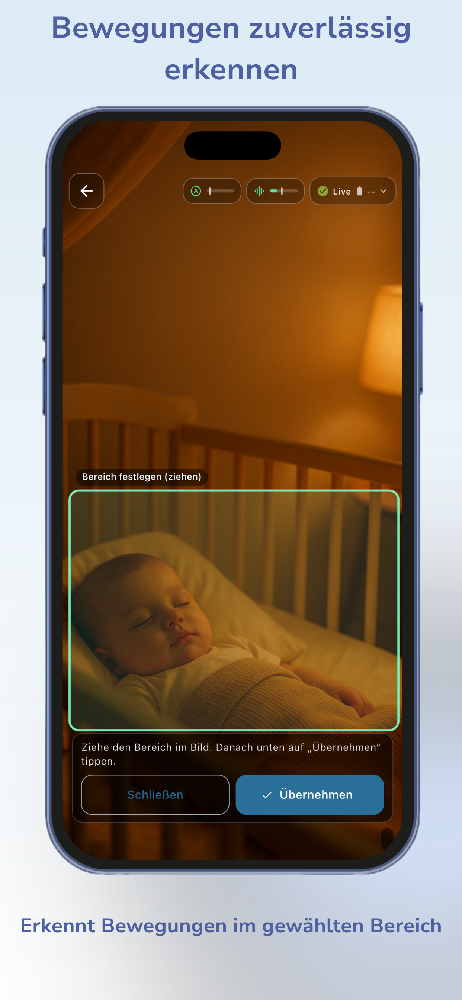
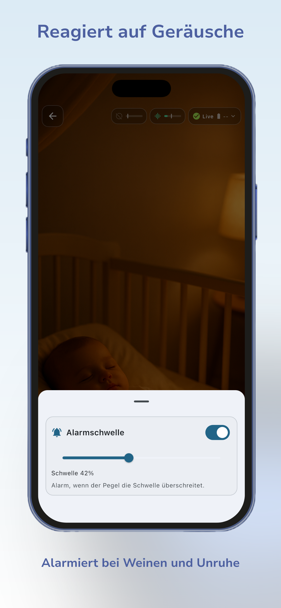
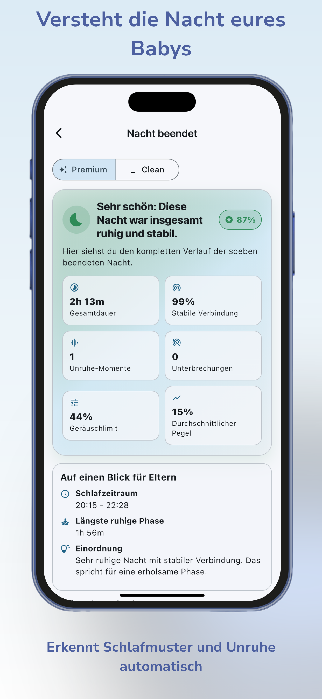
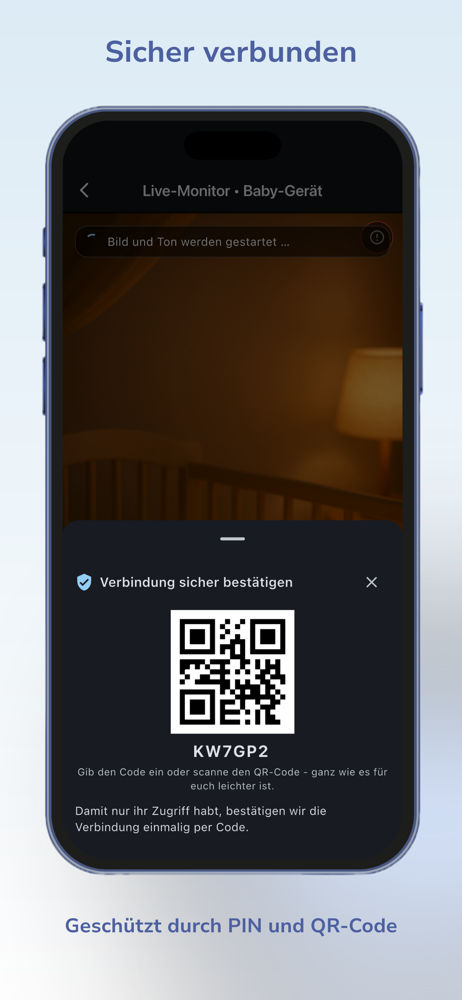
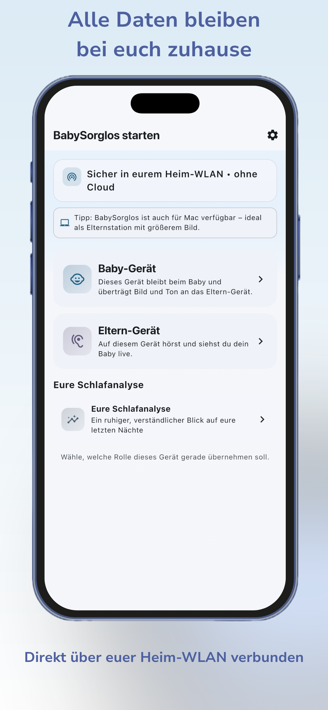
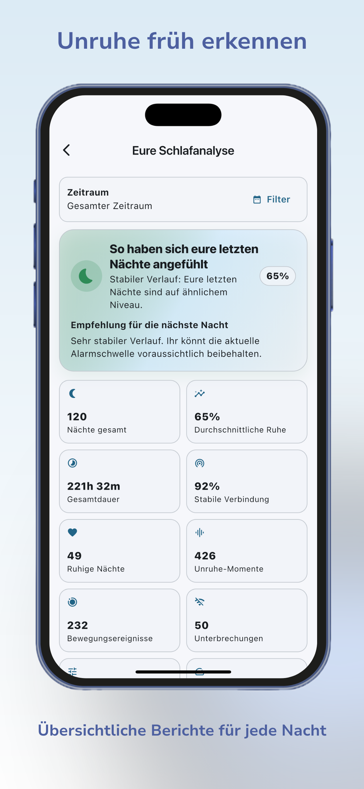

Baby-Gerät aufstellen
Ein iPhone oder iPad bleibt im Kinderzimmer und überträgt Bild und Ton an das Eltern-Gerät.
Familie · WLAN-Babyphone · iPhone, iPad & Mac
Verwandelt iPhone, iPad oder Mac in ein privates WLAN-Babyphone mit Live-Bild, Ton, Bewegungs- und Geräuscherkennung. Die Verbindung läuft direkt über euer Heimnetz – ohne Cloud-Zwang.


Warum BabySorglos
Klassische Babyphones benötigen zusätzliche Hardware, die nach der Babyzeit meist ungenutzt in der Schublade landet. Viele App-Lösungen arbeiten dafür mit Konten oder externen Cloud-Diensten. BabySorglos verbindet stattdessen eure vorhandenen Apple-Geräte direkt in eurem eigenen Netzwerk: Ein Gerät bleibt beim Baby, das andere wird zum Elternmonitor – als lokales Babyphone ganz ohne zusätzliche Anschaffung.
Ein iPhone oder iPad bleibt im Kinderzimmer und überträgt Bild und Ton an das Eltern-Gerät.
Auf dem zweiten Gerät wählt ihr die Eltern-Rolle und bestätigt die Verbindung per PIN oder QR-Code.
Funktionen
Alle Kernfunktionen der WLAN-Babyphone-App im Überblick – mit echten Ansichten aus der App.
Seht und hört euer Baby in Echtzeit über das eigene Heim-WLAN – als Baby Kamera App direkt auf dem Eltern-Gerät.

Legt einen Bildbereich fest und lasst Bewegungen innerhalb dieses Bereichs erkennen.

BabySorglos reagiert auf Geräusche und hilft dabei, Unruhe schneller wahrzunehmen.

Erhaltet verständliche Übersichten über Ruhephasen, Bewegungen und Geräusche einer beendeten Nacht.
Dient der Orientierung, keine medizinische Beurteilung
Verbindet die Geräte mit PIN oder QR-Code direkt über das Heimnetzwerk.

Nutzt BabySorglos auf iPhone, iPad und Mac – passend zu eurer Gerätekombination als iPhone-Babyphone oder iPad-Babyphone.
Datenschutz
BabySorglos ist für die direkte Nutzung im eigenen Heim-WLAN ausgelegt. Die Verbindung zwischen Baby- und Eltern-Gerät funktioniert ohne Cloud-Zwang und ohne verpflichtendes Benutzerkonto: eine direkte, lokale Verbindung statt werbebasierter Profilbildung oder unnötiger Registrierung.
So funktioniert es
BabySorglos auf zwei kompatiblen Apple-Geräten installieren.
Auf einem Gerät die Rolle „Baby-Gerät" auswählen – es überträgt Bild und Ton.
Auf dem anderen Gerät die Rolle „Eltern-Gerät" auswählen, um live mitzuhören und mitzusehen.
Verbindung per PIN oder QR-Code herstellen – fertig ist euer WLAN-Babyphone.
Schlafanalyse
Nach jeder Nacht zeigt euch die Schlafanalyse von BabySorglos eine ruhige, verständliche Übersicht: erkannte Ruhephasen, Bewegungsereignisse, Geräuschereignisse und die Verbindungsqualität – zusammengefasst in einer klaren Zusammenfassung.
Einzelne Auswertungen der Schlafanalyse können als Premium-Funktion beziehungsweise In-App-Kauf angeboten werden. Die Ergebnisse hängen von Aufstellung, Verbindung und eurer individuellen Nutzungssituation ab.
Keine medizinische Diagnose – dient der Orientierung für Eltern
Gerätekombinationen
Ein paar Beispiele, wie sich BabySorglos als iPhone-Babyphone, iPad-Babyphone oder Babyphone für Mac kombinieren lässt.
Ein iPhone bleibt beim Baby, ein zweites iPhone dient den Eltern als mobiler Live-Monitor.
Das iPhone überträgt aus dem Kinderzimmer, während das iPad mit größerem Display als Elternstation dient.
Das iPhone bleibt beim Baby, der Mac eignet sich mit großem Bildschirm besonders gut als feste Elternstation zuhause.
Im Vergleich
| BabySorglos | Typische alternative Lösung |
|---|---|
| Vorhandene Apple-Geräte nutzen | Zusätzliche Hardware kann erforderlich sein |
| Verbindung im Heim-WLAN | Je nach Lösung lokale oder Cloud-Verbindung |
| Kein Cloud-Zwang | Teilweise Benutzerkonto oder Cloud notwendig |
| Live-Bild, Ton und Analyse in einer App | Funktionsumfang variiert |
| PIN- und QR-Code-Verbindung | Einrichtung abhängig vom Produkt |
Eigenschaften anderer Lösungen variieren je nach Hersteller und Produktversion.
FAQ
BabySorglos verbindet Baby- und Eltern-Gerät direkt über euer Heim-WLAN. Für diese lokale Verbindung ist kein Internetzugang erforderlich – ihr benötigt lediglich ein gemeinsames WLAN-Netzwerk, in dem sich beide Geräte befinden.
Ja. Für die Babyphone-Funktion legt ihr ein Gerät als Baby-Gerät fest, das Bild und Ton überträgt, und ein zweites als Eltern-Gerät, auf dem ihr euer Baby live seht und hört.
BabySorglos läuft auf iPhone, iPad und Mac mit aktueller Betriebssystemversion. Der Mac eignet sich durch das größere Display besonders gut als Eltern-Station.
BabySorglos ist für die direkte Verbindung im eigenen Heim-WLAN ausgelegt, ohne Cloud-Zwang. Details zur genauen Datenverarbeitung findet ihr in der Datenschutzerklärung der App.
Nein, für die Grundfunktion von BabySorglos ist kein Pflichtkonto notwendig. Die Verbindung zwischen euren Geräten wird direkt per PIN oder QR-Code bestätigt.
Ihr bestätigt die Verbindung einmalig per PIN-Code oder QR-Code, damit nur eure eigenen Geräte Zugriff auf Bild und Ton erhalten.
Die Schlafanalyse fasst Ruhephasen, Bewegungs- und Geräuschereignisse sowie die Verbindungsqualität einer Nacht zusammen und stellt sie verständlich dar. Sie dient der Orientierung und ersetzt keine medizinische Beurteilung.
Nein. BabySorglos ist kein Medizinprodukt und ersetzt keine medizinische Beratung oder die notwendige Aufsicht über euer Baby.
Ja, BabySorglos steht kostenlos im App Store zum Download bereit. Einzelne Funktionen wie die erweiterte Schlafanalyse können als In-App-Kauf angeboten werden.
BabySorglos ist für die Nutzung innerhalb des eigenen Heim-WLANs konzipiert, in dem sich Baby- und Eltern-Gerät gemeinsam befinden.
Jetzt starten
Installiert BabySorglos auf euren Apple-Geräten und verbindet sie direkt über euer Heim-WLAN.
Warum lokale WLAN-Lösungen für datenschutzbewusste Eltern sinnvoll sind – und wo die Grenzen liegen.
Artikel lesen →Weitere Familien-Apps
Entwicklung, Erinnerungen und Familienmomente – der digitale Begleiter für Eltern.
Alle Funktionen, Screenshots und App-Store-Informationen auf der App-Detailseite.
28+ iOS-Apps für Business, Familie, Lifestyle und mehr – direkt im App Store.